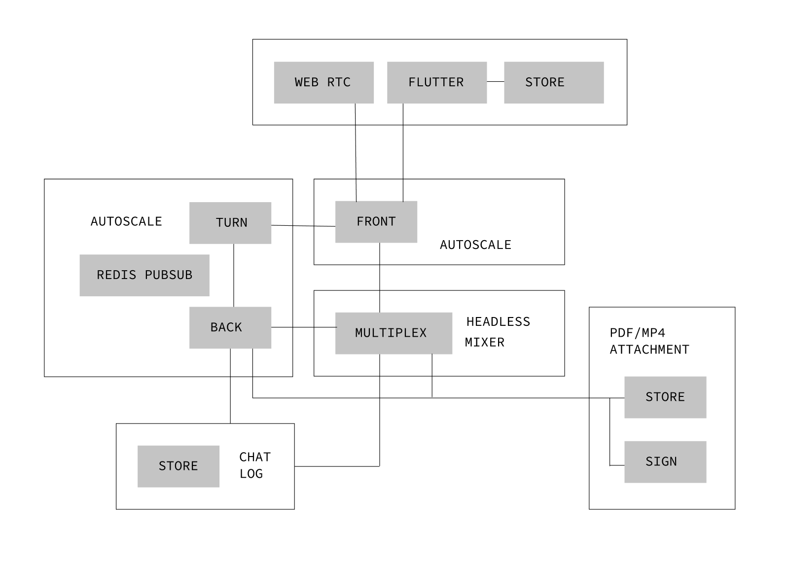

<!DOCTYPE html><html><head><meta charset="utf-8"><meta http-equiv="x-ua-compatible" content="ie=edge"><meta property="fb:app_id" content="118554188236439"><meta name="viewport" content="width=device-width, initial-scale=1"><meta name="author" content="Maxim Sokhatsky"><meta name="twitter:site" content="@5HT"><meta name="twitter:creator" content="@5HT"><meta property="og:type" content="website"><meta property="og:image" content="https://avatars.githubusercontent.com/u/17128096?s=400&amp;u=66a63d4cdd9625b2b4b37d724cc00fe6401e5bd8&amp;v=4"><meta name="msapplication-TileColor" content="#ffffff"><meta name="msapplication-TileImage" content="https://anders.groupoid.space/images/ms-icon-144x144.png"><meta name="theme-color" content="#ffffff"><link rel="stylesheet" href="main.css"><link rel="apple-touch-icon" sizes="57x57" href="https://anders.groupoid.space/images/apple-icon-57x57.png"><link rel="apple-touch-icon" sizes="60x60" href="https://anders.groupoid.space/images/apple-icon-60x60.png"><link rel="apple-touch-icon" sizes="72x72" href="https://anders.groupoid.space/images/apple-icon-72x72.png"><link rel="apple-touch-icon" sizes="76x76" href="https://anders.groupoid.space/images/apple-icon-76x76.png"><link rel="apple-touch-icon" sizes="114x114" href="https://anders.groupoid.space/images/apple-icon-114x114.png"><link rel="apple-touch-icon" sizes="120x120" href="https://anders.groupoid.space/images/apple-icon-120x120.png"><link rel="apple-touch-icon" sizes="144x144" href="https://anders.groupoid.space/images/apple-icon-144x144.png"><link rel="apple-touch-icon" sizes="152x152" href="https://anders.groupoid.space/images/apple-icon-152x152.png"><link rel="apple-touch-icon" sizes="180x180" href="https://anders.groupoid.space/images//apple-icon-180x180.png"><link rel="icon" type="image/png" sizes="192x192" href="https://anders.groupoid.space/images/android-icon-192x192.png"><link rel="icon" type="image/png" sizes="32x32" href="https://anders.groupoid.space/images/favicon-32x32.png"><link rel="icon" type="image/png" sizes="96x96" href="https://anders.groupoid.space/images/favicon-96x96.png"><link rel="icon" type="image/png" sizes="16x16" href="https://anders.groupoid.space/images/favicon-16x16.png"><link rel="manifest" href="https://anders.groupoid.space/images/manifest.json"><style>svg a{fill:blue;stroke:blue}
[data-mml-node="merror"]>g{fill:red;stroke:red}
[data-mml-node="merror"]>rect[data-background]{fill:yellow;stroke:none}
[data-frame],[data-line]{stroke-width:70px;fill:none}
.mjx-dashed{stroke-dasharray:140}
.mjx-dotted{stroke-linecap:round;stroke-dasharray:0,140}
use[data-c]{stroke-width:3px}
</style></head><body class="content"></body></html><html><head><meta property="og:title" content="ЄСІКС — ВКЗ"><meta property="og:description" content="Єдина Судова Інформаційно-комунікаційна Система — Відеоконференцзв'язок"><meta property="og:url" content="https://vkz.ujics.com"></head></html><title>ЄСІКС — ВКЗ</title><article class="main"><div class="exe"><section></section><p style="font-size: 14px;">Тут представлені звіти активностей процесу виробництва ISO-9001
Єдиної Судової Інформаційно-комунікаційної Системи (ЄСІКС)
або Unified Judicial Information Communication System (UJICS),
яка складається з 10 томів.
</p></div><br><hr size=1><br><div class="exe"><section></section><h1>ВКЗ</h1><p>Процес модернізації та супроводу підсистеми відеоконференцзв'язку (ВКЗ) включає наступні стадії:
</p></div><div class="types"><div class="type"><ol class="type__col"><h3>Аналіз</h3><li style="font-size:14px;"><a href="okr/okr.pdf">Цілі та результати</a></li><li style="font-size:14px;"><a href="https://ca.n2o.dev/priv/legal_l2_court_profile.pdf">Безпека</a></li><li style="font-size:14px;"><a href="policy/policy.pdf">Політики</a></li><li style="font-size:14px;"><a href="requirement/business.pdf">Технічні вимоги</a></li></ol><ol class="type__col"><h3>Впровадження</h3><li style="font-size:14px;"><a href="specifications/specifications.pdf">Технічні завдання</a></li><li style="font-size:14px;"><a href="implementation/">Референсні імплементації</a></li><li style="font-size:14px;"><a href="quality/">Система контролю якості</a></li></ol><ol class="type__col"><h3>Підтримка</h3><li style="font-size:14px;"><a href="documents/instructions.pdf">Посібник користувача ВКЗ</a></li><li style="font-size:14px;"><a href="documents/admin.pdf">Настанови адміністратора ВКЗ</a></li><li style="font-size:14px;"><a href="https://uacourt.github.io/itsm/">Система реагування на інциденти</a></li><li style="font-size:14px;"><a href="telemetry/">Система телеметрії</a></li></ol></div></div><br><div class="exe"><section></section></div><br><div class="exe"><section></section><h2>ЦІЛІ ТА РЕЗУЛЬТАТИ</h2><p>Стратегічне планування розробки та модернізації підсистеми ВКЗ на період Q3-Q4 2026 року здійснюється за методологією OKR (Objectives and Key Results) з інтеграцією стандартів управління проектами ISO 21502:2020 та управління якістю ISO 9001:2015.</p><div style="padding-top: 8px;"><a href="okr/okr.pdf">&nbsp; Цілі та результати проєкту ЄСІКС (OKR)</a></div><h2>БЕЗПЕКА</h2><p>Впровадження комплексних заходів захисту інформації згідно з профілями безпеки NIST SP 800-53B та НД ТЗІ 3.6-006-24. Архітектура передбачає імплементацію Опорного монітора (Reference Monitor) для забезпечення неможливості обходу політик доступу.</p><div style="padding-top: 8px;"><a href="https://ca.n2o.dev/priv/legal_l2_court_profile.pdf">&nbsp; Галузевий профіль безпеки Судової системи України</a></div><h2>ПОЛІТИКИ</h2><p>Базові архітектурні, методологічні та нефункциональні мета-правила розробки, які регламентують створення та розвиток усіх підсистем ЄСІКС.</p><div style="padding-top: 8px;"><a href="policy/policy.pdf">&nbsp; Політики проєкту ЄСІКС</a></div><h2>ВИМОГИ</h2><p>Том VIII-5 деталізує функціональні та технологічні вимоги до підсистеми ВКЗ. Протоколи та медіа-тракти спроектовано відповідно до міжнародних галузевих стандартів:
<b>Транспорт та сигналізація WebRTC:</b> RFC 8825 (архітектура), RFC 8829 (JSEP для SDP Offer/Answer), RFC 8835 (транспорт), RFC 4960/8261 (SCTP over DTLS), RFC 3711 (SRTP) та RFC 5763/5764 (DTLS-SRTP).
<b>Мережеве проходження (NAT Traversal):</b> RFC 5245 (ICE), RFC 8489 (STUN), RFC 8656 (TURN).
<b>Кодеки та синхронізація потоків:</b> ITU-T H.264 (ISO/IEC 14496-10), ITU-T H.265 (ISO/IEC 23008-2) для відео, RFC 6716/7587 (Opus) для аудіо, RFC 3550/3551 (RTP/RTCP) та RFC 4585 (RTP/AVPF Feedback).
<b>Вбудована телеметрія:</b> Протокол реального часу WebSocket Secure (WSS, RFC 6455).</p><div style="padding-top: 8px;"><a href="requirement/business.pdf">&nbsp; Том VIII: Бізнес, аналіз і звітність (Вимоги ВКЗ)</a></div><br><h2>ТЕХНІЧНІ ЗАВДАННЯ</h2><p>Детальні технічні специфікації для інтеграції медіасерверів OpenVidu 3.2.0, налаштування Redis Pub/Sub для горизонтального масштабування сигнальних серверів та розгортання в Kubernetes.
</p><h2>ТЕХНОРОБОЧИЙ ПРОЄКТ</h2><p>Шаблони інтеграції для SPA/PWA веб-клієнтів та важкого клієнта фіксації засідань на Flutter (Flutter Offline Client), який підтримує локальну БД SQLite, роботу з платами BlackMagic/OBS та автовивантаження архівів на Scality S3.</p><br><p><figure></figure>
</p><br><h2>ПОСІБНИКИ</h2><p></p><div style="padding-top: 8px;"><a href="documents/instructions.pdf">&nbsp; Посібник користувача ВКЗ</a></div><br><p>Інструкції щодо налаштування мережевих екранів у судах (відкриття портів STUN 3478 UDP/TCP, TURN 3478/5349/8443/8444 UDP/TCP), конфігурації медіа-трактів та підключення обладнання. Також описано логіку прямого стрімінгу через Nginx-фронтенди зі сховища Scality S3 з підтримкою Ranges для перегляду за таймстампами.</p><div style="padding-top: 8px;"><a href="documents/admin.pdf">&nbsp; Настанови адміністратора ВКЗ</a></div><h2>ТЕЛЕМЕТРІЯ</h2><p>Вбудована система телеметрії на вебсокетах (RFC 6455) для передачі клієнтських метрик WebRTC Statistics API (стан ICE, RTT, джитер, втрата пакетів, навантаження CPU) у реальному часі на Telemetry Collector Node для подальшого аналізу в ELK та сповіщень у Zabbix.</p><div style="padding-top: 8px;"><a href="telemetry/">&nbsp; Панель моніторингу телементрії ВКЗ</a></div></div><br></article><hr><footer class="footer"><span class="footer__copy">2026 &copy; <a rel="me" href="https://hcj.gov.ua" style="color:white;"><u>Вища Рада Правосуддя</u></a><br></span><span class="footer__copy">2026 &copy; <a rel="me" href="https://dsa.court.gov.ua" style="color:white;"><u>Державна Судова Адміністрація</u></a><br></span><span class="footer__copy">2026 &copy; <a rel="me" href="https://ics.gov.ua" style="color:white;"><u>Інформаційні Судові Системи</u></a><br></span><br><br><br><script src="https://groupoid.space/highlight.js?v=1"></script></footer>